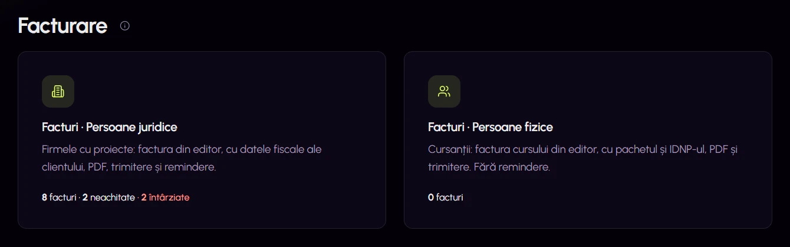

Facturarea, dintr-o privire
- Problema
- Facturile firmelor și ale cursanților se amestecau, iar starea lor nu se vedea fără să deschizi fiecare factură.
- Soluția
- Un ecran de pornire separă facturile persoanelor juridice de cele ale persoanelor fizice și afișează numărul total, cele neachitate și cele întârziate.
